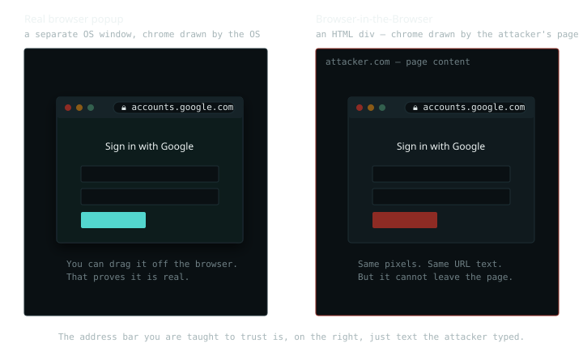
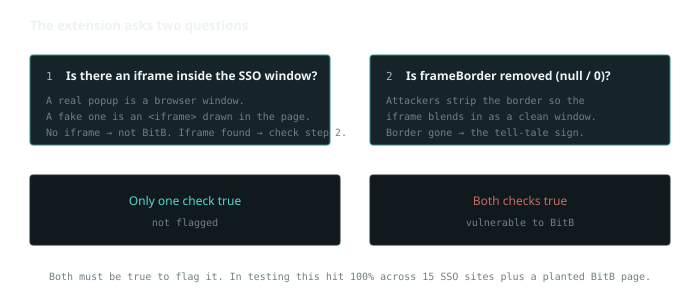

4 February 2024 · web
Browser-in-the-Browser: phishing that survives the address-bar check
We tell people the same thing every security-awareness session: check the address bar. Look for the padlock, read the domain, make sure it's HTTPS. Browser-in-the-Browser is the attack that makes that advice fail, and it does it without a single clever exploit. It just draws a fake window, address bar and all, inside the page. I spent a while on this during my research and ended up publishing on it; this is the plain-language version.
The one idea
When you click "Sign in with Google," a real popup opens, a separate
operating-system window with its own title bar and address bar, drawn by
the browser. BitB replaces that with an HTML element that looks exactly
like the popup. The title bar, the little traffic-light buttons, the
padlock, the text accounts.google.com, all of it is markup
and CSS on the attacker's page. It's a picture of a window, not a window.

So if it's just HTML, why does anyone fall for it? Because the two are
pixel-for-pixel identical. The victim is checking the URL exactly like we
trained them to, and the URL says accounts.google.com,
because the attacker typed those characters into a <div>.
The check passes. That's what makes BitB nasty: it doesn't defeat the
user's caution, it satisfies it.
Why it's worse than normal phishing
Ordinary phishing sends you a link to a fake site and hopes you type your password for that one site. BitB goes after the SSO login instead, the "Sign in with Google" button. If it steals that, it hasn't stolen one password, it has stolen the key to every site where you use that Google login. That's the difference, and it's why BitB is more dangerous than a normal fake page.
It's also not a man-in-the-middle attack. A man-in-the-middle sits between you and a real server and quietly reads the traffic. BitB never sits in the middle of anything. It just draws a convincing fake window on a page you were tricked into visiting, and waits for you to type.
Signs you might be looking at one
A few things give it away. The site might look slightly off, or the real URL in your actual browser bar (not the fake popup) might be wrong, or on plain HTTP instead of HTTPS. When you type your login into the fake window, you often get an error instead of logging in, because the attacker already has what they wanted. And later, you might get a "new login from a new device" alert from the real service. If any of that happens, change the password and turn on two-factor.
Why the usual defences don't fire
Walk down the checklist people are taught, and watch each one pass on a fake:
Is it HTTPS? Yes, the attacker's real page
(attacker.com) is served over HTTPS with a valid certificate.
The fake popup drawn on it inherits that green feeling. Is the
domain right? The address-bar text reads
accounts.google.com, so yes. Is there a padlock?
There's a padlock glyph, because the attacker drew one. Every signal we
taught users to rely on is attacker-controlled content, so every signal
says "safe."
BitB doesn't break the address bar. It draws a second one you were never supposed to trust, in the one place you were told to look.
The tell
There is one thing the attacker can't fake: a real OS window is a real OS
window. You can drag it off the edge of the browser, move it to a second
monitor, minimise it on its own. The fake can't leave the page it's painted
on. Try to drag it past the browser's edge and it clips, because it's a
<div> with position and a drag handler, not
a window the OS knows about. That's the manual test: grab the popup and pull
it outside the browser. If it can't go, it isn't real.
That works for a careful human but not at scale, which is the part my research went after: how do you detect this automatically, from inside the browser, before the user types anything?
Detecting it automatically
The manual drag test works for a careful person, but not at scale. So the real question my research went after was: can the browser catch this on its own, before the user types anything? It turns out you can, with two simple checks.

The first check: is there an iframe inside the SSO window? A
real popup is a genuine browser window, so there's no iframe. A fake one is
built as an <iframe> sitting inside the page, so finding
one is the first clue.
The second check: has the iframe's frameBorder been removed,
set to null or 0? Attackers strip the border so the iframe
blends in and looks like a clean window instead of a boxed-in frame. A
missing border is the tell.
Both have to be true before flagging anything, so a normal iframe on a page doesn't trip a false alarm. I built this as a small Chrome extension and tested it on 15 real SSO sites plus a BitB page I hosted myself. It correctly identified every one, a 100% hit rate in that test set. The full write-up is in the paper: Securing Web Browsing: Detection of Browser-in-the-Browser Attack (Springer).
If you can't trust the extension
If you ever doubt a login window and don't have the extension handy, you can check by hand. Try to drag the popup outside the browser window. A real one moves out; the fake one is stuck inside the page. Or minimise the browser and see if the login window vanishes with it. If it stays put, it was never a real window. These two manual checks are the same idea the extension automates.